Unit One Pieces
Welcome to my unit 1 portfolio so far!
Below you will find annotated pieces of work i've made throughout unit 1 so far!
Object Study
For this task we had to take a mundane object we had in our bag and draw around it to create something interesting. This was a little challenging for me since my object was essentially just a line by itself, but I enjoyed drawing what I came up with in the end. It helped me think more creatively about prop design and how you don't have to be confined to the typical array of objects associated with a topic if there's no reason not to think outside the box. I think that this piece shows that I can quickly come up with an idea and delve into it deeper with smaller details in a short amount of time. In the future, I am going to take a more creative approach to prop design, and keep in mind the “describing it as an alien” aspect as it can place you in a mindset with a completely different perspective than you're used to.
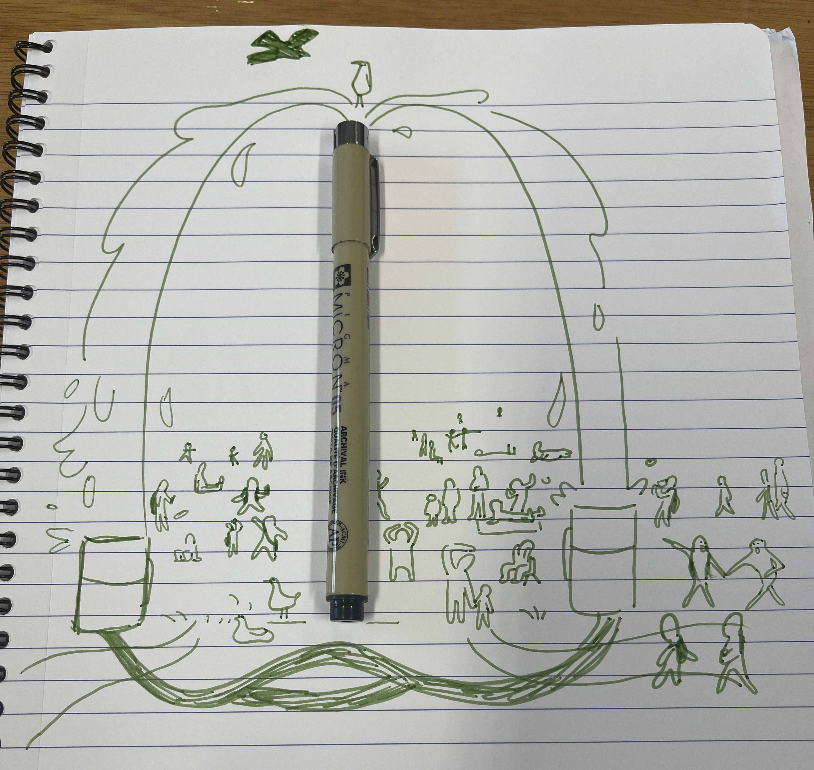
Character Walk
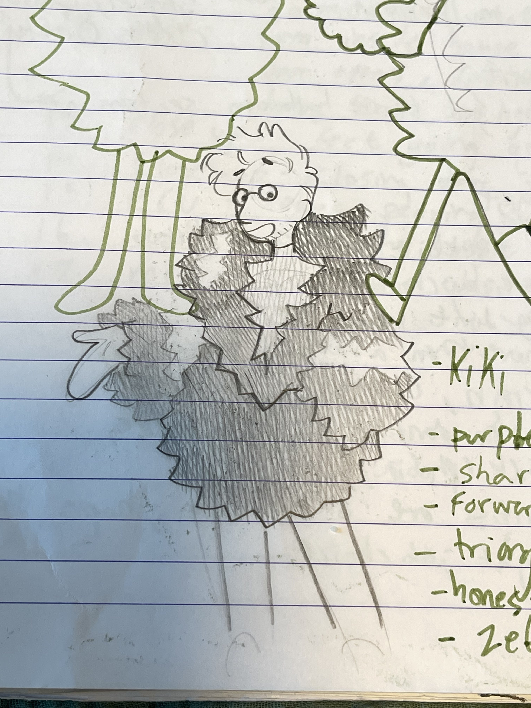
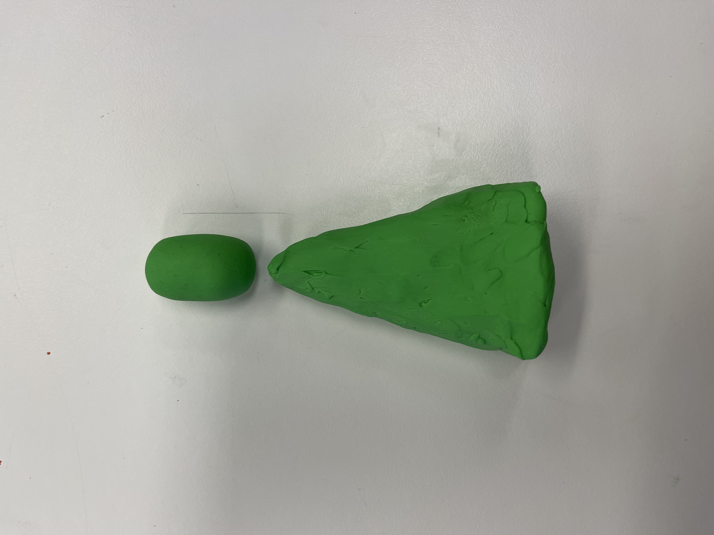
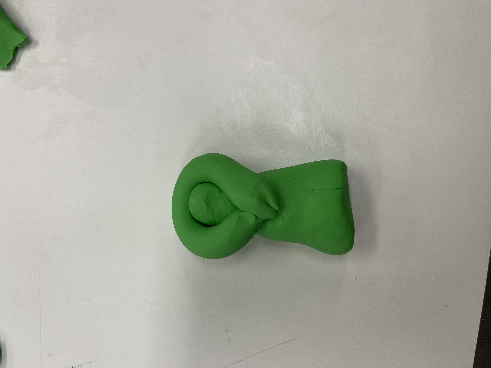
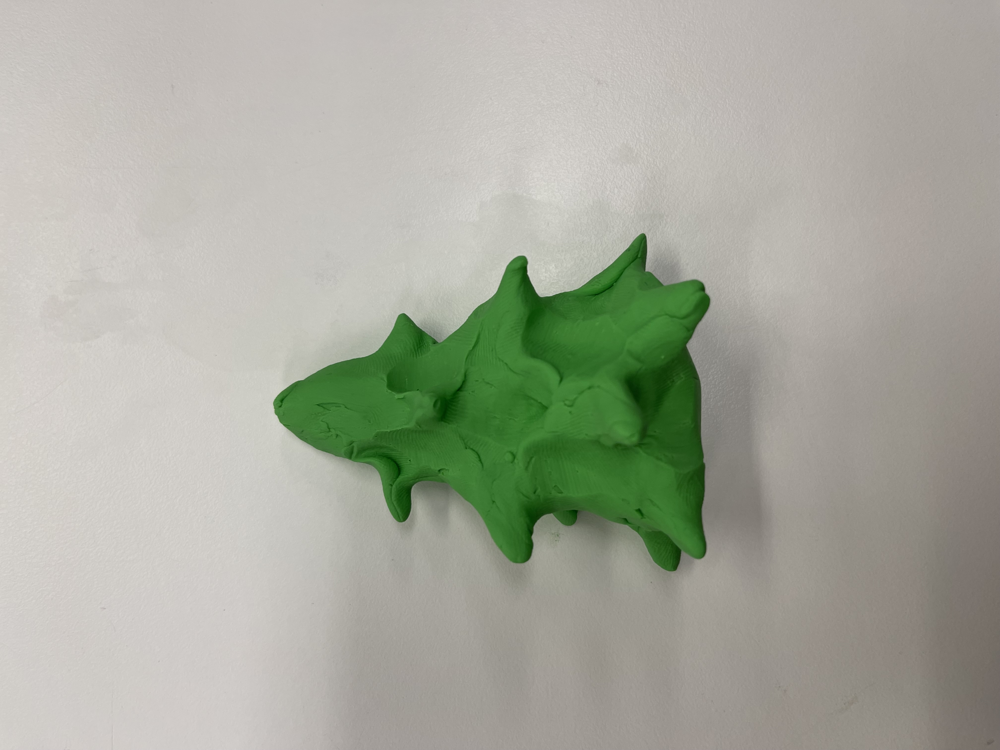
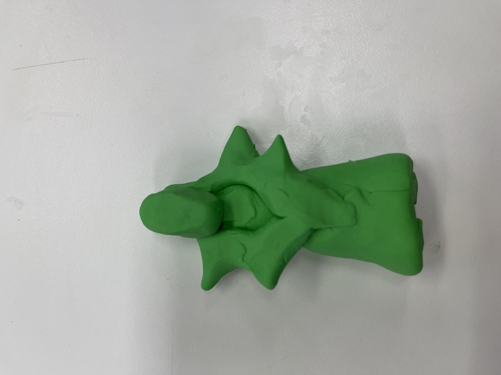
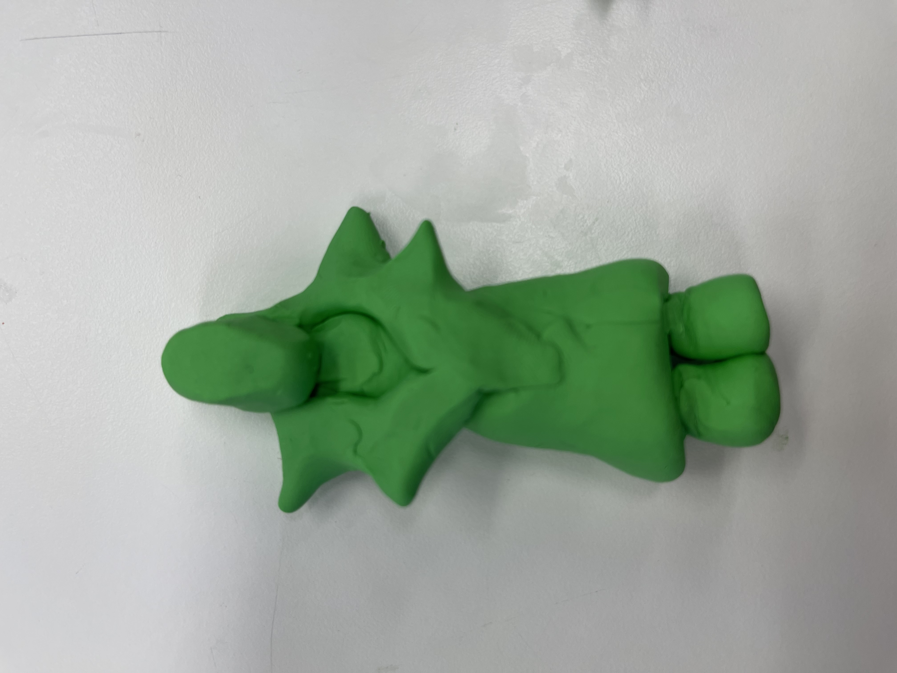
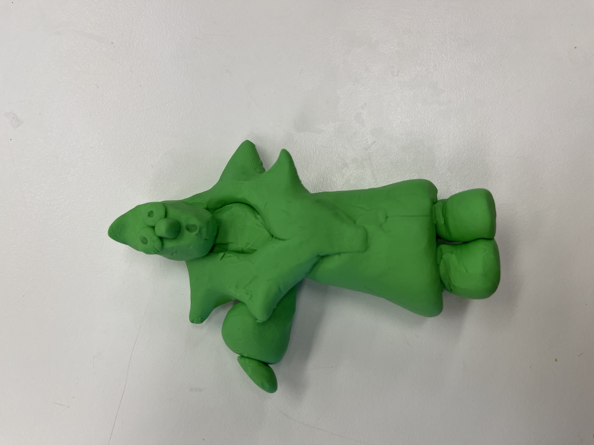
In this task we went outside to find a person we found interesting, drew them and created attributes for them. I chose a middle aged man with a really interesting fluffy jacket with bright green and purple stripes. I am drawn to big shapes, interesting silhouettes and contrasting colours when it comes to character design. I included this piece because I believe it shows that I am able to transfer 2d shapes to 3d shapes in a coherent way, and it has been something that has always been a bit challenging for me and I think it turned out well in this instance.
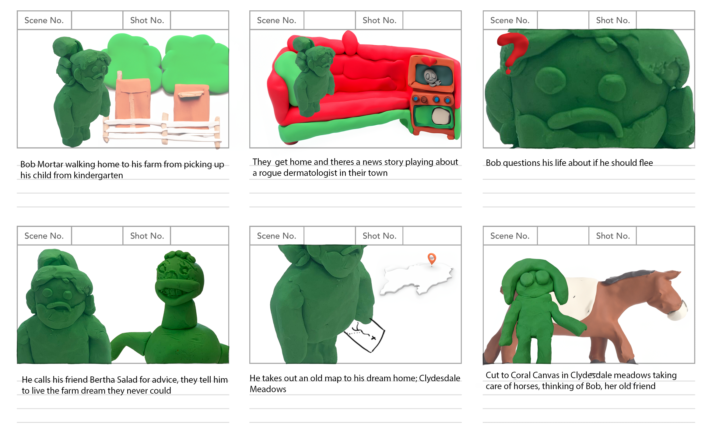
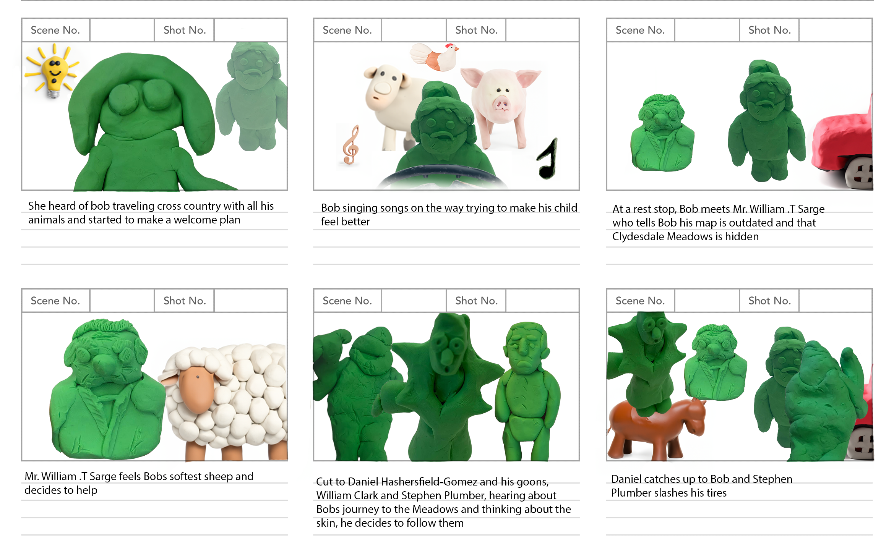
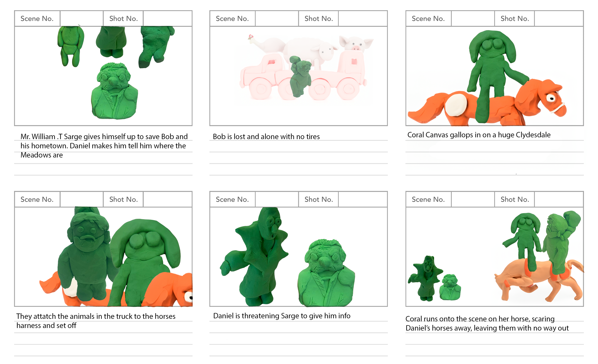
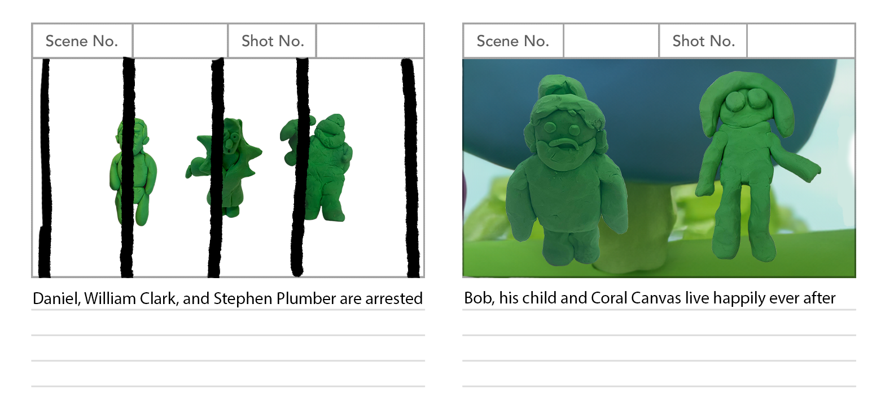
For this story board I created a simple story using everyone's character who was in my group. It was a bit hard at first to think of something that made sense, but after I got the ball rolling it was easier to connect the individual ideas from everyone just by pulling from prior knowledge about tropes and movies. Since there are so many stories about horses, animals, or a person seeking out their dream place to live, there was a lot to pull from when at first it seemed like all the ideas were disconnected. After that, Isabelle, one of my group members removed the background from the pictures we took of the plasticine and I edited them into the board to tell the story. I think this work showcases the diverse ways you can create a storyboard, and I personally learned that having a set amount of assets and manipulating them into different shot sizes and compositions can be just as effective as drawing.
Story of Orpheus Storyboard

For this task we were suppose to make a storyboard out of our favorite frames in the movie "." I had a lot of fun with this
project, it was challenging because of how much emphasis was on the hands but not so much in that it was frusterating. Since
the film was in black and white it made it easier to add values and I really enjoyed doing that with the cross hatching instead
of just selecting a color and filling in things solid, since the sketches were rough a lot of the linework wasnt connected so using
the fill tool would have been slower than cross hatching and I liked how it turned out even if I didnt get to add values to everything.
Animation Morph
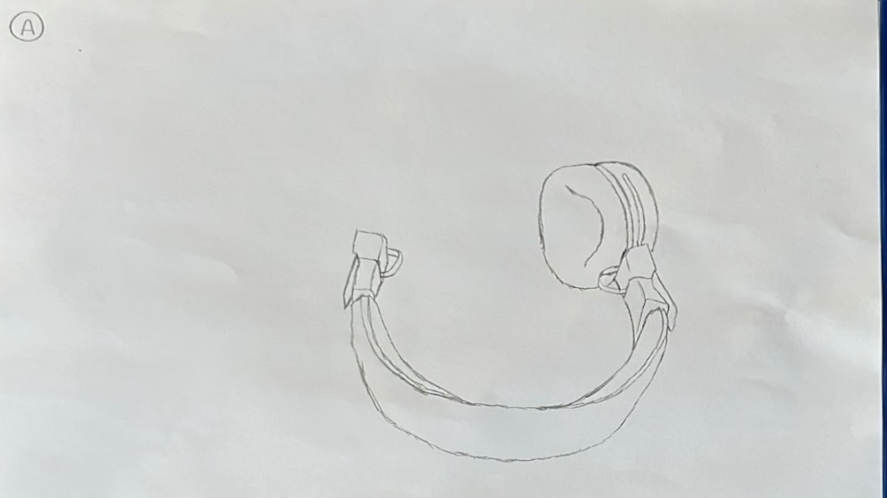
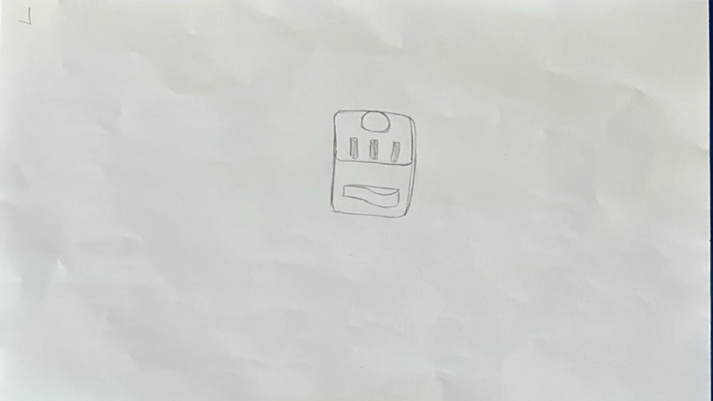
for this task we were suppose to pick an object we had and draw it, then re-draw the drawing our neighbor drew of their object in order to animate them
transitioning from one to another. Since we had no lightbox my animation sorta stays in the same plays or moves at odd times, but I really enjoyed
the process of animating, at first it was hard to decide what order to draw the keyframes but I got the hang of it. I really liked thinking
about what the combination of two frames would be, it was challenging enough to be fun but not enough to be frusterating.
Response Project


For this project we were supposed to make a response to an image of a man hugging a boy from a train car window, and a song with religious themes. I included this piece because it shows how I can use different mediums and experiment with unique supplies in order to achieve a coherent narrative. I think this shows how quickly I can adapt to using new supplies as an artist, and come up with new ways to incorporate them with things I already know about. For example, I had never used oil pastels before, but I used cross hatching which I was familiar with, which I believe made an appealing colourful design. While making this, I learned that I really love making 3d paper artwork, as well as using oil pastels. I am definitely going to find more ways to use both these mediums in my work in the future.
Maidstone Shortiflm
Mockumentary
I included this piece to showcase my early editing skills and show how I’ve improved from here. I believe as an artist, this shows how much I value pacing in my work, as even though it is one of the first videos I edited I think the pacing fits the narrative of the piece very well. When doing this piece I learned how important it is to plan your time around a task you know you're not familiar with doing, since I had not edited very many things at that point I didn't know exactly how long it would take. I know now that if I’m doing something I’m not familiar with, I should add extra time to that task.